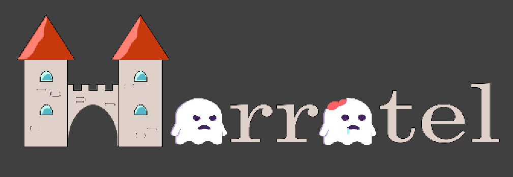

Horrotel es una aplicación de reserva de castillos encantados ubicados en Europa. Horrotel ofrece al usuario principalmente 2 funcionalidades:
La reserva de castillos permite al usuario informarse acerca de los diferentes castillos encantados disponibles en la aplicación.
El usuario podrá encontrar el castillo que más se asemeje a sus necesidades por medio de los filtros que la aplicación proporciona, entre los que se encuentra un filtro por país, otro por precio máximo y un último por encantamientos deseados.
A su vez la aplicación proporciona la opción de buscar el nombre del castillo directamente en una barra de búsqueda, en caso de que el usuario ya sepa exactamente que castillo desea ver y no quiera buscarlo manualmente
Una vez encontrado el castillo deseado, el usuario podrá seleccionar el número de días que desea pasar su estancia, así como el número de personas que se van a alojar y el número de habitaciones a reservar, teniendo en cuenta que el máximo de personas por habitación en cada castillo es de 2
Una vez rellenados los datos de la reserva y calculado el precio final de la misma, la aplicación mostrará un menú que permite formalizar la reserva por medio del nombre y apellidos de la personas que reserva, así como su DNI. Es importante que la persona que realiza la reserva sea mayor de edad pues en caso contrario no se podrá formalizar la misma.
Una vez completada la reserva, el usuario dispone de un apartado en el que consultar las reservas realizadas por medio de su DNI. En este apartado podrá consultar los datos de sus reservas así como cancelar la que desee
Horrotel dispone del juego "Los Cazafantasmas" con el que el usuario dispondrá de la posibilidad de obtener un descuento en alguna de sus reservas cuyo valor puede ser del 10% o del 25%.
El funcionamiento del juego está explicado en la propia aplicación y consiste en un tablero en forma de pirámide en el que se ubican, en la parte inferior, los cazafantamas que controlará el jugador, en la cúspide de la pirámide, el fantasma lider, y en el resto del tablero 5 cuadrillas de fantasmas.
Las cuadrillas de fantasmas son grupos de 3 fantasmas del mismo tipo que se encuentran distribuidas de forma aleatoria a lo largo del tablero. Cada cuadrilla a su vez, es de un tipo distinto al de las otras 4
El objetivo principal del juego será eliminar un fantasma de cada una de las cuadrillas, haciendo así que no quede ninguna cuadrilla completa. Haciendo esto, el jugador ya obtendrá un descuento del 10%, si además de esto, el jugador consigue eliminar al fantasma lider, el descuento será del 25%.
Para poder eliminar a los fantasmas, el jugador dispone de un dado que podrá tirar 7 veces. Dicho dado proporcionará al jugador un número cuyo valor puede ser 1 o 2. Este número indica cuantas posiciones podrá avanzar el jugador en vertical con uno de sus cazafantasmas.
El avance de un cazafantasmas hacia una casilla que contiene un fantasma supondrá la eliminación de dicho fantasma y permitirá al jugador volver a tirar el dado para seguir con la partida
Una vez finalizada la partida, el jugador será informado del resultado de la misma y del descuento obtenido en caso de haber ganado alguno. El jugador tendrá entonces la posibilidad de guardar el descuento por medio de un DNI que será el mismo con el que se realizará la reserva en la que se quiere aplicar dicho descuento, o podrá jugar de nuevo, perdiendo así el descuento obtenido.
Es importante recalcar que un mismo DNI no se puede usar para guardar varios descuentos simultáneamente Para poder guardar un descuento con un DNI, el DNI no debe haber sido utilizado con anterioridad para guardar un descuento o debe haberse gastado el descuento anteriormente almacenado